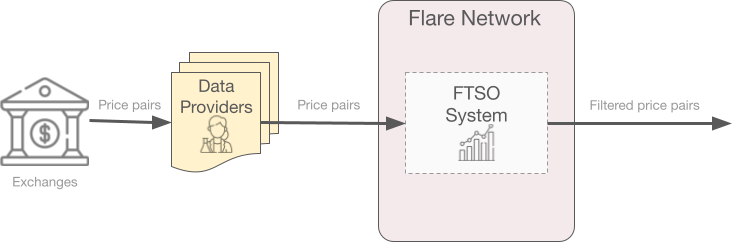
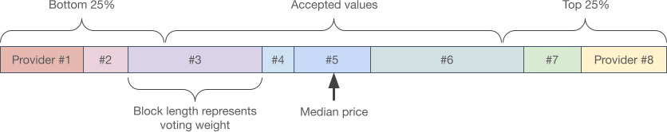
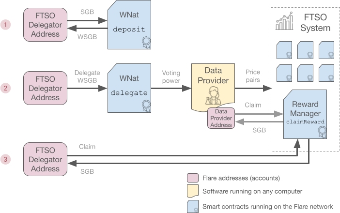

FTSO#
The Flare Time Series Oracle (FTSO) is a smart contract running on the Flare network that provides continuous estimations for different types of data. It does so in a decentralized manner (no single party is in control of the process) and securely (it takes a lot of effort to disrupt the process).
To achieve a secure, decentralized system, a set of independent data providers retrieves data from external sources, like centralized and decentralized exchanges, and supplies the data to the FTSO system. Then, this information is weighted according to each provider's vote power, and a median is calculated to produce the final estimate.
Important
When FTSOs were initially designed, they supported only cryptocurrency price pairs. Now, they support all types of data. However, contract names and methods still refer to prices and price epochs, and price pairs are used in the following information to show how FTSOs work.
The following diagram shows how price pairs are submitted to and filtered by the FTSO system.

Data providers that supply useful information, such as price pairs that are not removed as outliers because they are too far away from the median value, are rewarded, and the resulting data estimates are finally published on-chain.
The following information describes:
- The FTSO workflow
- How results are calculated
- Vote power
- Delegation
- How developers can submit data, claim rewards, and use the data in an app
Procedure Overview#
Using price data as an example, the procedure in the following diagram runs continuously. It produces new data estimates during every price epoch, which is 3 minutes long.

-
Any user with an account (address) on the Flare network can act as an FTSO data provider, submit data, and collect rewards.
During each epoch, only submissions from the 100 data providers with the most vote power are considered. An account's vote power is based on its wrapped
$FLRor$SGBbalance and the delegations made to it (see Vote Power below).In this example, submitted data must be the current price (in
$USD) for one or more of the supported price pairs, currently:$XRP,$LTC,$XLM,$DOGE,$ADA,$ALGO,$BCH,$DGB,$BTC,$ETH, and$FIL. On Songbird, additionally, you have$SGB.More general data types might be added in the future.
-
FTSO data providers submit data in rounds in a commit-and-reveal process, so they cannot see each other's submissions until a round is over.
This process is like submitting data in a closed envelope, and when the round is over, all envelopes are opened.
During a 3-minute price epoch, providers fetch the information, run their algorithms, and submit a hash of the data (commit). Then, during the first half of the following price epoch (1.5 minutes), providers submit the actual data (reveal).
See technical details about the data-submission process below.
-
The FTSO system calculates the resulting median, taking into account each provider's vote power (see How Results are Calculated below).
Results are publicly available for 5 price epochs for any app or contract to read. Previous epochs can always be retrieved from an archival node.
-
For each price epoch in which the submitted data is close enough to the median value, data providers and their delegators are rewarded.
Rewards are accumulated in reward epochs, which last 3.5 days on the Flare network and 7 days on Songbird, and you can claim them after the epoch finishes.
See Rewards below.
How Results are Calculated#
The following example uses price pairs to show the filtering process that turns all submitted data into a single estimate. See all details in the Flare whitepaper.

-
The contract in charge of each price pair calculates the resulting price for a price epoch using the submissions received from all data providers during that epoch. Price epochs are 3 minutes long.
-
Each submission has a price and a weight. Weight is based on the data provider's vote power, as explained below.
-
The weighted median of the prices is the resulting price for the price epoch.
-
Submissions in the top and bottom 25% range are not rewarded.
Vote Power#

-
As explained above, an FTSO data provider's submissions are weighted by its vote power. A data provider's vote power is proportional to the amount of wrapped Flare or Songbird tokens (
$WFLRor$WSGB) it holds, plus any amount delegated to it.A data provider's influence is limited
A vote-power cap limits the influence of individual data providers to 2.5% of the total vote power on both Flare and Songbird.
Any vote power above this cap is ignored. If vote power exceeds the limit, consider delegating those
$WFLRor$WSGBto a different data provider. -
A snapshot of each data provider's vote power is taken once per reward epoch, and the resulting weight is then used throughout the next reward epoch.
- The actual snapshot block is called the vote-power block, and it is randomly chosen from the last blocks of the previous epoch. On Flare, the vote-power block is randomly chosen from roughly the last 50% of the blocks, and on Songbird, it is randomly chosen from roughly the last 25%. The random selection only roughly corresponds to the last 50% or 25% of the time because block production times are not constant.
Reward epochs
The first reward epoch on Songbird started on Saturday, 18 September 2021 08:41:39 (GMT), 1631954499 in Unix time and repeats every 7 days. Therefore, all Songbird reward epochs start on Saturday morning (GMT).
The first reward epoch on Flare started on Thursday, 21 July 2022 19:00:05 (GMT), 1658430005 in Unix time and repeats every 3.5 days. Therefore, all Flare reward epochs start on Thursday evening (GMT) and Monday morning (GMT).
Delegation#
If you hold $FLR or $SGB tokens, you can delegate them to an FTSO data provider to increase its vote power and earn a share of its rewards, resulting in a mutually beneficial arrangement.
When you delegate your vote power, you not only earn rewards but also support reliable data providers, which strengthens the stability of the FTSO and the whole ecosystem.
Before you can delegate your native $FLR and $SGB tokens, you must wrap these tokens into ERC-20 $WFLR and $WSGB tokens, an operation you can reverse at any time.
After you wrap your tokens, you will have the vote power that is equivalent to the wrapped token balance, and you can delegate 100% of this vote power to 1 or 2 data providers. Delegating 100% of your vote power to reliable data providers committed to providing accurate data maximizes your rewards and enhances the stability of the ecosystem.
The reward rate (for advanced users)
As you explore data providers, consider the expected reward rate each one offers. The reward rate describes how many tokens were earned by a data provider during a reward epoch for every 100 tokens delegated.
The reward rate is calculated as \(total\_reward / vote\_power * (100 - fee)\), where:
- \(total\_reward\): All accumulated rewards for the data provider and its delegators in the reward epoch.
- \(vote\_power\): All the data provider's
$WFLRand all the$WFLRdelegated to it in the vote-power block selected for the reward epoch. - \(fee\): The amount kept by the data provider as compensation for the service it provides. The value is specified as a percentage. For example, if the data provider's fee is 21.3%, specify 21.3 to calculate the reward rate.
Because rewards are distributed in units of $FLR, the reward rate is calculated in units of $FLR.
For the duration of the delegation, you will earn rewards that are commensurate with vote power and the performance of the chosen data providers. Rewards accumulate, and they become claimable for each reward epoch that is finalized.
Inflation is distributed to everyone who participates in the FTSO system, which includes data providers and entities that delegate their vote power to the data providers. Delegated tokens are not locked, meaning that they remain in the user's control and the delegation can be removed at any time.
Any $WFLR or $WSGB that is newly wrapped, sent, or received will automatically update your actual delegated vote power.
However, if you receive native tokens, you must wrap them before you contribute to existing delegations.
Immediate Delegation Revocation#
Sometimes, a data provider might maliciously attack the FTSO system to skew the reported data. If this type of attack occurs, the vote power of a data provider can be revoked immediately instead of in the next reward epoch.
In this situation, an off-chain process, such as a Twitter storm, calls for users to revoke vote power from the data provider that has attacked the system. When vote power is revoked, the revocation occurs immediately.
Learn how to perform this operation from the block explorer.
Effects of the Vote-Power Block Snapshot on Delegations#
The following table shows when new, changed, and revoked delegations take effect in relation to the vote-power block snapshot.
| Delegation Type | Before or After Vote-Power Block Snapshot | When Delegation Takes Effect |
|---|---|---|
| New or changed | Before | In the next reward epoch |
| After | After the next reward epoch ends | |
| Revoked | N/A | Immediately |
Delegation Procedure#
You can delegate your tokens using the Flare Portal, a supported wallet like Bifrost, or a dapp. Some FTSO data providers have already started providing these dapps as a convenience. Take a look at flaremetrics.io and pick the one you prefer.
If you are an advanced user, you can delegate manually by interacting directly with the FTSO smart contracts.
Rewards#
A percentage of the annual network inflation is reserved to reward FTSO data providers and distributed uniformly among the year's reward epochs. The mechanism that distributes rewards to data providers consists of several bands:
- Primary reward band: This band rewards 50% of submitted data, weighted by vote power and centered around the median price. That is, the primary reward band fixes the rewarded vote power at 50%, which makes the width of the primary reward band in each epoch variable.
- Secondary reward band: This band rewards submitted data that falls within a fixed percentage around the calculated median. That is, the width of the secondary reward band is fixed, which makes the rewarded vote power in each epoch variable.
Submitted data in each reward epoch belongs to one of the following:
- Primary reward band
- Primary and secondary reward band
- Neither reward band
On Flare, only the primary reward band is enabled, and reward epochs are 3.5 days.
Important
Support for the secondary reward band on Flare is planned and will be managed by a governance vote on a proposal similar to STP.02.
On Songbird, both the primary reward band and secondary reward band are enabled, and reward epochs are 7 days. In each reward epoch, rewards are distributed to providers whose submission falls within the primary or secondary reward bands.
Because the secondary reward band is wider, it rewards more data providers than the primary band. However, submissions still must be close enough to the median to be included. If a submission falls within both bands, it receives both rewards because each reward band is independent.
The secondary reward band receives 30% of all FTSO rewards, and the primary reward band receives the remaining 70%. As the FTSO system evolves, these reward percentages might be revised later, in accordance with an accepted proposal that requests changes to the secondary reward band.
After the band rewards are distributed, each provider can take an optional, configurable fee, which is set to 20% by default, and distributes the rest of the reward among all contributors to its vote power, i.e., itself and all its delegators, according to the delegated amounts.
If you delegated to a data provider, the amount of your rewards depends on multiple factors:
- The percentage of vote power you delegated
- The data providers to which you delegated your vote power
- The performance of those data providers
- The fee charged by those data providers
- Whether the total vote power of one or both of those data providers exceeded the vote power cap
You can claim your rewards at the end of each reward epoch.
You must claim your rewards within 90 days of their availability. After 90 days, unclaimed rewards on Flare are burned, and on Songbird, they are reallocated.
Reward-Claiming Procedure#
FTSO rewards are not automatically transferred to their recipients. Instead, the amounts are accumulated in a contract, as described in the System Architecture, and must be claimed once the reward epoch is finished.
You can claim your rewards using the Flare Portal, a supported wallet like Bifrost, or a dapp. Take a look at flaremetrics.io and pick the one you prefer.
If you are an advanced user, you can claim manually by interacting directly with the FTSO smart contracts.
To save on gas costs, rewards from multiple reward epochs are claimed simultaneously when you use the Portal. However, be aware that rewards expire after 90 days. Moreover, you probably want to claim soon, to redelegate the received amount and obtain compounded rewards.
It is also worth noting that:
- Rewards are paid in the network's native currency. On Flare, the native token is
$FLR, and on Songbird, the native token is$SGB. - Data providers and their delegators must claim independently.
Technical Details#
This section is aimed at developers.
System Architecture#
The FTSO system is composed of multiple smart contracts running on the Flare Network.
Using prices as an example, the following diagram shows the flow of data, queries, and rewards through the FTSO system:

The following list describes the most relevant contracts and their purposes:
-
FTSO: Each data type is handled by its own FTSO contract, including calculation of the filtered feed.
To retrieve information about a data type, access this contract.
Note
If an FTSO contract is redeployed (for example, to fix a bug), its address will change and apps using it will need to be updated. The FTSO Registry contract below tracks this change for you.
You can retrieve the addresses of all FTSO contracts using the
getAllFtsosmethod in the FTSO Registry. -
FTSO Registry: Aggregates the output of each individual FTSO contract and provides a convenient one-stop API to retrieve all data.
-
Price Submitter: This contract is used by the FTSO data providers to submit their data. Although the contract is called
PriceSubmitter, data is not limited to prices. -
Reward Manager: Use this contract to claim your rewards, whether you are a data provider or a delegator.
-
Wrapped Native (WNat): This contract is not exclusively related to the FTSO system, but it is required to wrap and unwrap native tokens into the
$WFLRand$WSGBthat delegation requires.
Note
The Contract Addresses page explains how to securely retrieve each contract's address.
Other contracts, like the FTSO Manager or the FTSO Daemon, are only meant for internal use by the FTSO system.
Manual Delegation and Claiming#
The following graphic shows the delegation process. You can call methods in several different smart contracts to manually delegate vote power and claim rewards.

Data-Submission Process#
Data submission uses a commit-and-reveal scheme to prevent providers from viewing each other's submissions until a round is over. To speed up the process, both phases are actually overlapped so:
-
All Commit phases happen continuously in so-called 3-minute Price Epochs.
-
Reveal phases happen during the first half (first 90 seconds) of the following Commit phase.
-
The published price information is therefore updated every 3 minutes.
Only a hash of the data is submitted during the Commit phase. Next, in the Reveal phase the actual data is sent. If its hash does not match the previous commitment, the data is discarded.
The submission API is slightly different for the Flare and Songbird networks:
FTSO data providers submit data through the PriceSubmitter contract.
-
Commit: A single hash is needed for each submission.
function submitHash( uint256 _epochId, bytes32 _hash ) external; -
Reveal: After all data is submitted, a single random number must be submitted.
function revealPrices( uint256 _epochId, uint256[] memory _ftsoIndices, uint256[] memory _prices, uint256 _random ) external;
FTSO data providers submit data through the PriceSubmitter contract.
-
Commit: A separate hash is needed for each submission.
function submitPriceHashes( uint256 _epochId, uint256[] memory _ftsoIndices, bytes32[] memory _hashes ) external; -
Reveal: Along with each data submission, a random number must be submitted too.
function revealPrices( uint256 _epochId, uint256[] memory _ftsoIndices, uint256[] memory _prices, uint256[] memory _randoms ) external;
Retrieving Data#
Data produced by the FTSO is publicly available on the Flare and Songbird networks.
All data can be retrieved either through the FtsoRegistry contract or directly through one of the Ftso contracts.
In any case, using the getCurrentPriceWithDecimals method is recommended.
The following examples show how to use this method to retrieve price data.
From the FtsoRegistry contract:
function getCurrentPriceWithDecimals(
uint256 _ftsoIndex
) external view returns (
uint256 _price,
uint256 _timestamp,
uint256 _assetPriceUsdDecimals
);
Where _ftsoIndex is one of the allowed indices returned by getSupportedIndices, for example.
From the FtsoRegistry contract:
function getCurrentPriceWithDecimals(
string memory _symbol
) external view returns (
uint256 _price,
uint256 _timestamp,
uint256 _assetPriceUsdDecimals
);
Where _symbol is one of the allowed symbols returned by getSupportedSymbols, for example.
First you need to obtain the address of the Ftso contract managing the price pair you are interested in.
You can use getSupportedIndicesSymbolsAndFtsos from the FtsoRegistry, for example.
Then call getCurrentPriceWithDecimals on the FTSO directly:
function getCurrentPriceWithDecimals(
) external view returns (
uint256 _price,
uint256 _timestamp,
uint256 _assetPriceUsdDecimals
);
Note
Individual FTSO contracts might be updated periodically, which will change their addresses. Instead of caching these addresses, use the FtsoRegistry.
GetCurrentPriceWithDecimals returns the requested price (the outcome of the previous 3-minute price epoch) in $USD shifting the comma by the amount of decimal places returned in _assetPriceUsdDecimals.
That is, the actual price is _price * 10 -_assetPriceUsdDecimals.
For example, a return value of 2603 with _assetPriceUsdDecimals of 5 means a price of 0.02603 USD (There are only 5 significant decimal places).
A standard Unix timestamp of the last price update is also returned.